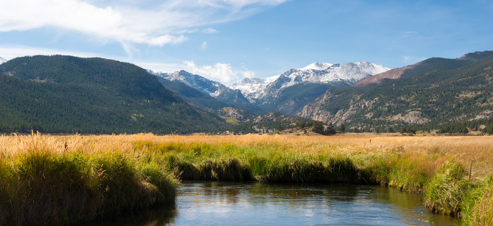
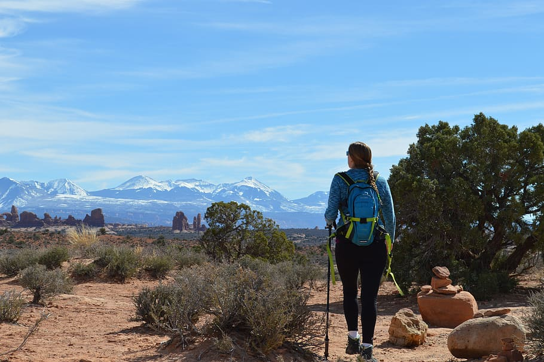

When hearing about Colorado you might hear from people that it’s pretty, or the mountain landscape that covers much of Colorado shows a beauty that is hard to capture in other places. These things are true, which might help to explain why the Forest Service has four National Parks in Colorado.These include:
- Rocky Mountain Park, Estes Park Colorado
- Black Canyon of the Gunnison, Gunnison Colorado
- Mesa Verde National Park, Mesa Verde Colorado
- Sand Dunes National Park, Alamosa Colorado
The founding of Parks and Monuments has been happening throughout Colorado for a long time, with National Parks being designated over 110 years and throughout 19 years ago. This long period of time has allowed some of the most beautiful places in the world to be preserved for many different Coloradans and Tourists to see the true wonders of nature. These parks are meant to preserve nature and preserve hiking, fishing, and camping for years to come.
A Unique Landscape
Although Colorado is a place famous for its mountains and high altitude, Colorado actually has a very diverse landscape. Places like Rocky Mountain and Black Canyon may remind you more of your standard Colorado, which is a pretty thing nonetheless. America the Beautiful was written about mountains. But the other two national parks in Colorado are actually more desert-like. These desert-like National Parks provide a fun and pretty mixture of sights to see throughout the state. These also are filled with their own history and culture that are the birth of those landscapes.
So enjoy Colorado and what this site has to offer. Thank you!